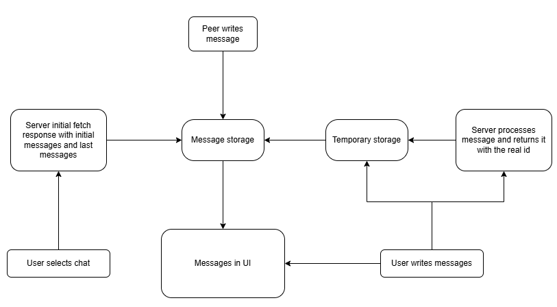

The client side is a kind of state machine for message order. Everything the user actually sees ends up in one place - the UI list - but messages arrive from many directions at different times, and they only reach the UI once they pass specific conditions. I built layers on top of layers: each layer applies its own rules on incoming and outgoing traffic, and each layer has a single job.
Active chat
The most obvious gate is the active chat - there can only be one. Only messages tied to that conversation are meant to drive the visible list.
Even that is not enough. I filter both stale pagination responses and live messages from the peer with a conversation epoch id: a unique id issued per chat opening. Checking the peer username against the active chat username alone failed in practice. The user can hop in and out of the same peer fast; a late response can still match the active peer by name and corrupt the current session. The epoch closes that hole: if the id does not match the open session, the payload is dropped.
Initial fetch, anchor, and who drives the thread
When the user selects a chat, the first response is an initial fetch. The server sends a page sized on the order of ~29 messages with an anchor somewhere in the middle. The anchor comes from the database: between the last sent message and the last seen message, the one with the larger messageId wins. That anchor is there to give the most recent context - the page is built upward and downward from it, up to 14 messages in each direction (so the user steers older traffic with scroll-up and newer traffic the other way).
Message storage and reconciliation
Early on page load I eagerly create a buffer per peer called message storage. Regardless of which chat is active, storage keeps the last window of received messages for that peer (up to 14). When the initial fetch returns, the "last messages" block from the response is reconciled with that buffer by messageId, so storage always tracks the latest tail for that peer.
Initial view and last view
The active chat is not fully defined until that first response arrives. The payload carries two parts: the initial page around the anchor, and the last-messages block.
To decide the view, I take the last messageId from the initial page in the fetch and compare it to the first message in storage after reconciliation (the smallest id in the buffer window). If the id from the initial block is larger, the session moves to last view. When the switch happens, the client treats the reconciled storage window as the live tail and uses it as the base set of messages for the UI, so the list is now in sync with storage. In last view, incoming peer messages can flow to the UI instead of only sitting in storage.
There are two other ways into last view: scrolling down (append fetch), and writing a message.
On append fetch, the rule is the same kind of comparison - the last message id from the appended page against the first id in message storage. When the append carries a message id larger than that storage bound, the chat switches to last view.

Writing a message (optimistic, no message id yet)
Sending is the hardest case because ordering is normally anchored on messageId, and an optimistic send does not have one yet - only a temporary id. So it cannot be reconciled straight into message storage like normal rows. It still belongs on screen right away, which is why optimistic messages are shown in the UI immediately after send.
I keep a temporary storage scoped to the client for that write. When the server ACK returns the real id, the row leaves temporary storage and is inserted into message storage. Once temporary storage is drained for that burst of sends, it goes away.
Sending cannot happen while the initial fetch is in flight - I disable the send button until the first response defines the chat session. But append and prepend fetches can be in flight while the user is typing and sending, and those fetches can still race live traffic. Optimistic messages are stored in temporary storage, and when an in-flight fetch finishes and the client continues its merge logic, the optimistic rows are reconciled by swapping the temporary id with the real messageId from the ACK, then inserting into message storage.
Server ordering
The server still decides order on the wire and in the database. These layers only decide what reaches the UI and in what order they are allowed to merge. I wrote separately about ordering on the server.